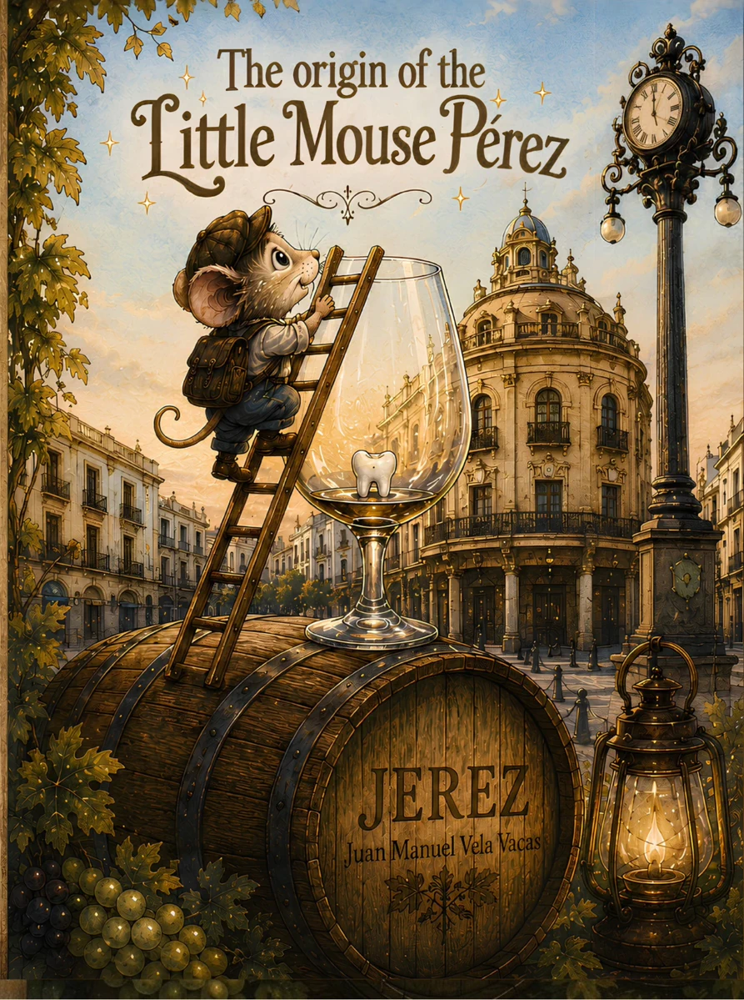
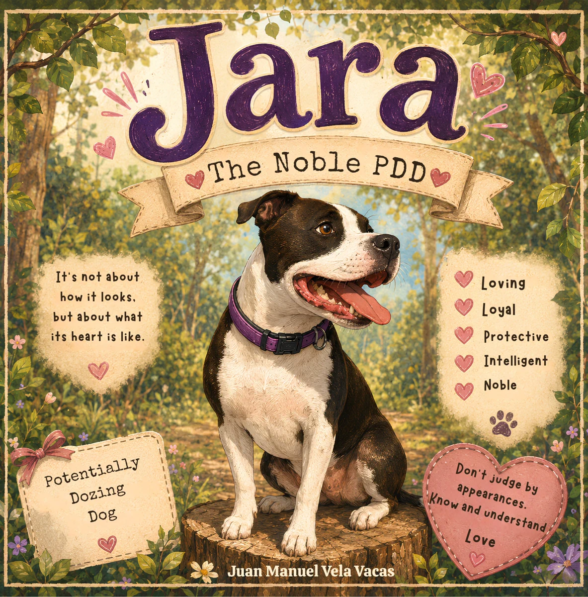
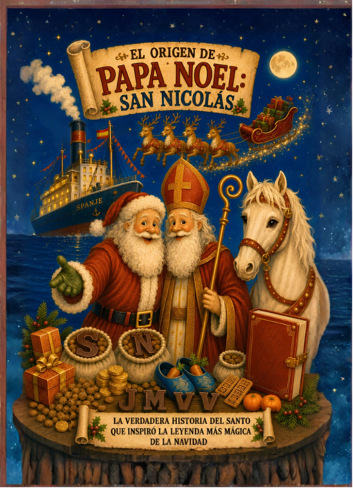
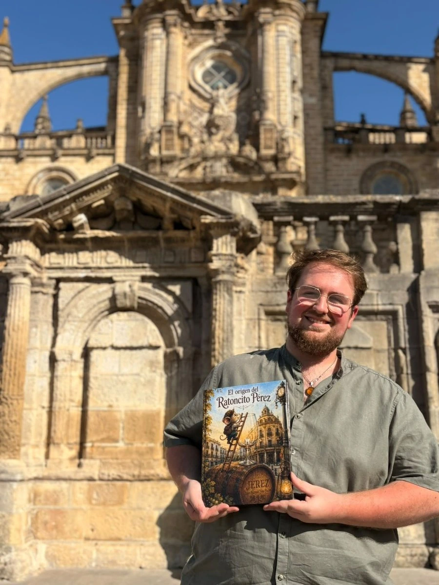

Juan Manuel Vela Vacas
Children's author from Jerez. Here you'll find my stories, my characters and the worlds I create, one page at a time.
DISCOVER MY BOOKSGET TO KNOW MEMy books
Very different stories, born from imagination, tradition and those little things that deserve to become a story.

The Origin of the Little Mouse Pérez
Before becoming the world's most famous mouse, Pérez was just a little mouse living in Jerez.
ENTER THE STORY →
Jara, the Noble PDD
A story about love, respect and education. Because it is not about how she looks, but about the heart she has.
📖 Available in Spanish, English and French
MEET JARA →
The Origin of Santa Claus: Saint Nicholas
An illustrated journey to the saint who inspired one of Christmas's most magical legends.
DISCOVER THE STORY →
Hello, I'm Juan Manuel.
I'm from Jerez and I love turning ideas, memories and little stories into tales that children and adults can enjoy together.
I'm inspired by tradition, animals and that special magic that appears when a story manages to stay in your memory.
Explore more stories
Discover the rest of the author's children's stories.